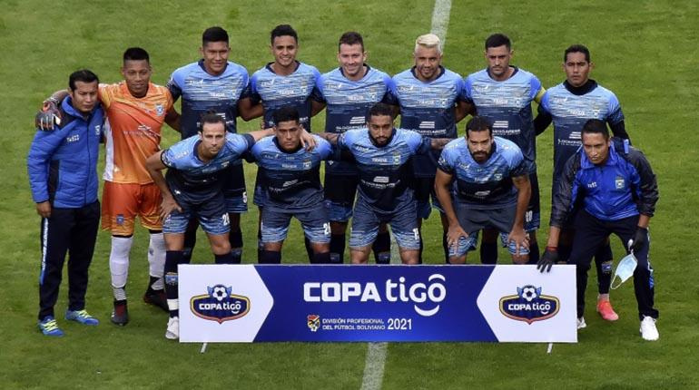
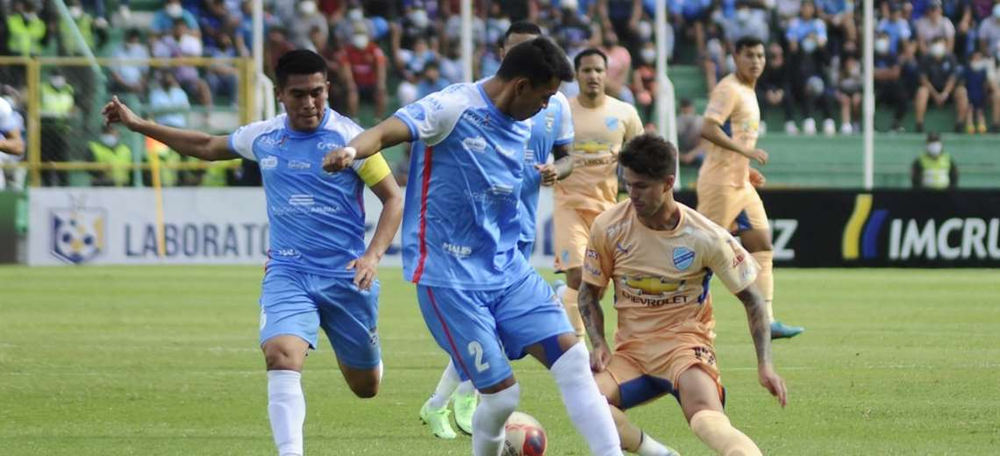

Historia de Bloming

Fila de Atras: Humberto Vaca Pereira, Rodolfo Castedo, Luis Moreno, Mario Quintela, Fito Gutierrez, HUmberto Olmos Olmos, Mario Palma Gomez, Humberto Rivera, Natalio Roca, Tity Flores Aguilera, Emilio Rivera Candia, Roque Candia y Juan Carlo Velarde Fila del Medio: Nancy Saucedo, Eddy Salvatierra, Chita Landivar, Ana Maria Reyes Ortiz, Beiby Landivar Lavaden, Ana Maria Quintela Vaca Diez, Sonia Velarde Ortiz, Betty Olmos y Tity Gutierrez Abajo: Ricardo Pereira, Rolando Olmos Olmos, Maria Lourdes Soria Galvarro, Mirian Palma, Silvia Chavez, Yiyo Casal Gutierrez y Rolando Roca
En 1946 un grupo de adolescentes compañeros del colegio Nacional Florida, afianzo su amistad creando un club juvenil, social, deportivo y cultural, al que bautizaron con el nombre de Blooming.
El encuentro se produjo en el círculo de amigos (Calle Independencia), entre los destacados y entusiasta de ese tiempo y de hoy, están: Humberto Vaca Pereyra (+), Humberto Olmos Olmos (+), Mario Quíntela Vaca Diez, Rodolfo Castedo, Juan Carlos Velarde (+), Alberto Lozada Cuellar, Ángel Flores Aguilera (+), Roque Candía. Estos amigos formaban parte del 3ro C del colegio Nacional Florida. Este mismo grupo en 1949decide formar la comparsa Los Chabacanos.
A pasar de ese entonces durante 24 años Blooming se constituyo en uno de los principales animadores de los torneos de la primera A de la Asociación Cruceña de Fútbol o por sus siglas denominada A.C.F. y candidato permanente al título.
Las actividades sociales y culturales con las que habían nacido el 1 de mayo de 1946 pasaron a segundo plano, otorgándole más énfasis al fútbol, deportes como el voleibol y el básquet fueron desapareciendo
Blooming cae de local ante Bolívar (2-3) por la semifinal del Torneo Apertura

Blooming cayó este domingo de local ante Bolívar por 2-3 en el estadio Ramón Tahuichi Aguilera, por la semifinal de la División Profesional del Torneo Apertura 2022.
El partido fue intenso y con un estadio repleto teñido de celeste, quienes antes de mediodía aguardaban en las afueras del Tahuichi para abarrotarlo. El encuentro cumplió con las expectativas y se vivió una fiesta, aunque el resultado fue adverso para los locales.
Los goles para la academia paceña llegaron a través de Bruno Savio (46'), Pablo Lima (87') y Javier Uzeda (93'). Mientras que para la academia cruceña los goles fueron anotados por Iribarren (67') y Rafinha (84').
Precisamente el sub-20 Javier Uzeda, que en el partido de revancha por los cuartos de final contra Oriente Petrolero fue clave para forjar a los penales, esta tarde fue el salvador de la academia paceña cuando anotó el 2-3 en el minuto 94.
Al finalizar el partido, Uzeda confesó que el partido fue un sabor amargo y dulce, pues si bien es jugador del plantel de Bolívar es hincha de Blooming.
El partido revancha de la semifinal se disputará este miércoles a las 20:00 horas en el estadio Hernando Siles.